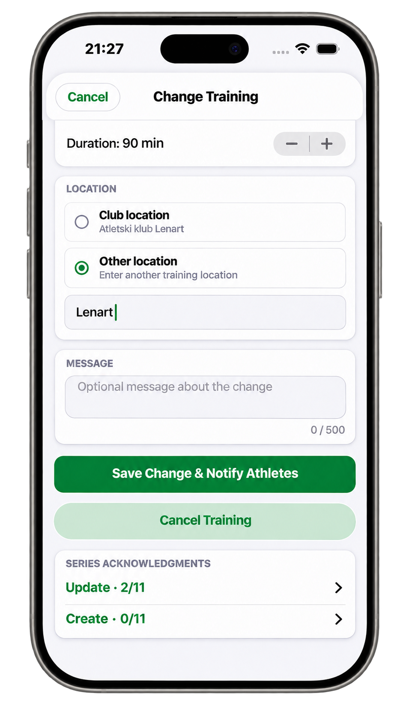
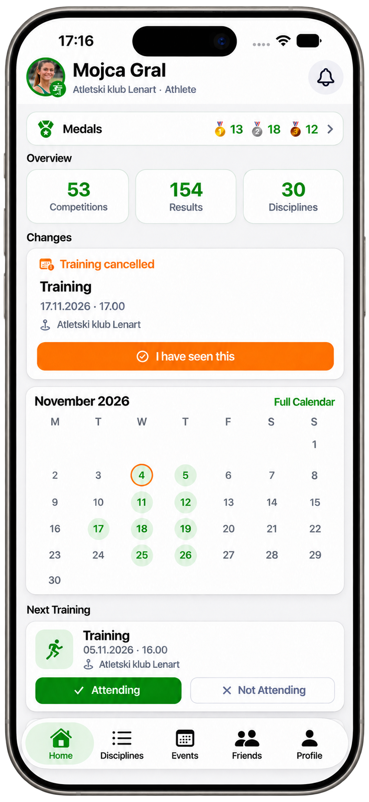

MYATHLETICS / ZA TRENERJE
Manj administracije.
Več časa za atlete.
Organiziraj treninge, spremljaj rezultate in komuniciraj s svojo ekipo – vse na enem mestu.
Za trenerje, atlete in starše. Povezani v istem atletskem vsakdanu.


Tvoja ekipa. Tvoj pregled.
01Atleti
Upravljaj svoje atlete
Ekipa ima skupen prostor. Vsak atlet svojo zgodbo. Poišči atlete po skupinah in odpri profil z disciplinami, rezultati ter pregledom napredka.
- Pregled atletov in vadbenih skupin
- Profil atleta z rezultati in medaljami
- Discipline, ki povezujejo tvojo ekipo


Od ekipe do posameznika.
02Treningi
Organiziraj treninge
Od načrta do spremembe termina. Ohranjen pregled v koledarju ti pomaga organizirati treninge in ekipi sporočiti, kaj se je spremenilo.
- Koledar in načrtovanje treningov
- Sprememba časa, trajanja ali lokacije
- Odpoved treninga in obveščanje atletov

Spremeni. Obvesti. Nadaljuj.
03Udeležba
Spremljaj udeležbo
Že pred treningom veš, kdo prihaja. Potrditve, prijave odsotnosti in dejanska prisotnost ti pomagajo razumeti, kaj se dogaja v ekipi.
- Atleti potrdijo ali zavrnejo udeležbo
- Razlog za odsotnost prispe do trenerja
- Trener evidentira dejansko prisotnost


Od odziva do prisotnosti.
04Komunikacija
Komuniciraj z ekipo
Prava informacija naj pride do pravih ljudi. Izberi posameznika ali skupino ter pošlji sporočilo atletom, staršem ali obojim.
- Izbira atletov, staršev ali obojih
- Prejemniki po vadbenih skupinah
- Sporočila posameznikom in pregled obvestil


Pošlji sporočilo atletom, staršem ali obojim

Pravi ljudje. Pravo sporočilo.
05Napredek
Spremljaj rezultate in napredek
Rezultat je več kot številka. Poveži discipline, osebne rekorde in pregled dosežkov ter spremljaj, kako se razvija vsak atlet.
- Rezultati po disciplinah in osebni rekordi
- Graf razvoja rezultatov skozi čas
- Medalje, statistika in pregled dosežkov

Napredek dobi svojo zgodbo.
06Tekmovanja
Tekmovanja na enem mestu
Treningi imajo svoj ritem. Tekmovanja svojo časovnico. Ohrani pregled prihajajočih in preteklih tekmovanj ter jih poveži z vsakdanom ekipe.
- Prihajajoča in pretekla tekmovanja
- Tekmovalni koledar ob treningih
- Dosežki ostanejo del atletove zgodbe


Od treninga do tekmovalnega dne.
07 / POVEZANA ATLETSKA SKUPNOST
Vse povezano.
V eni aplikaciji.
Trener, atleti in starši. Treningi, tekmovanja in rezultati. Manj razpršenih informacij in več prostora za tisto, kar šteje: atletiko.

Trener ↔ atlet ↔ starš
Imaš vprašanje o uporabi v svoji ekipi? Z veseljem pomagamo.